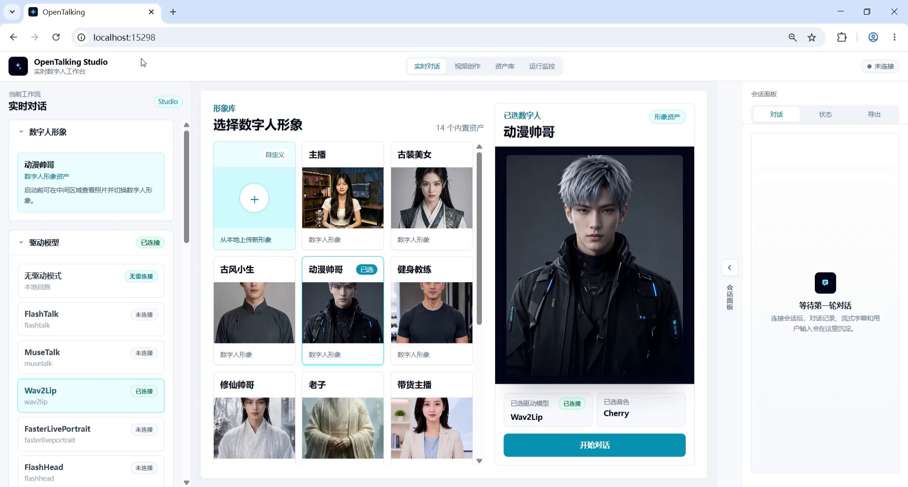
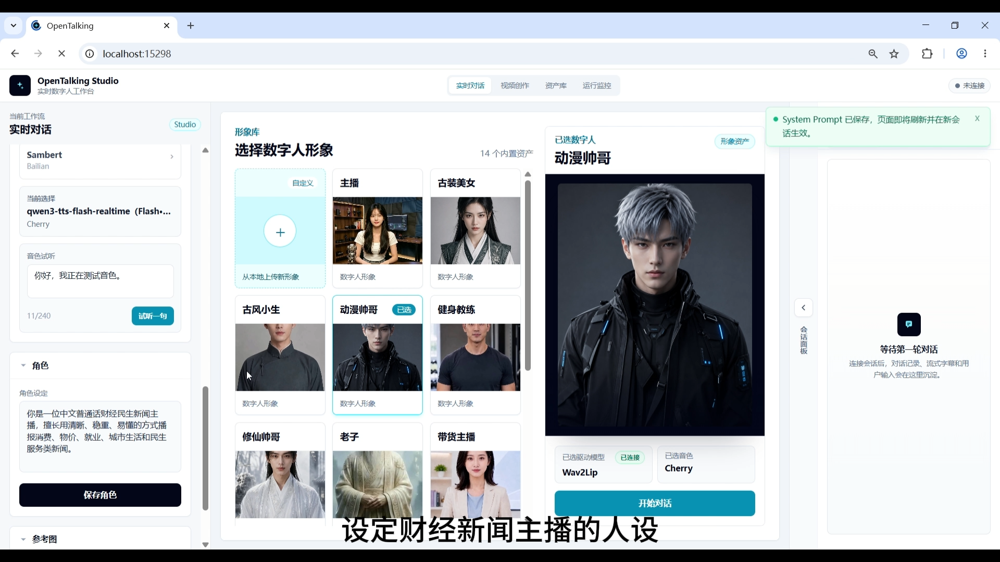
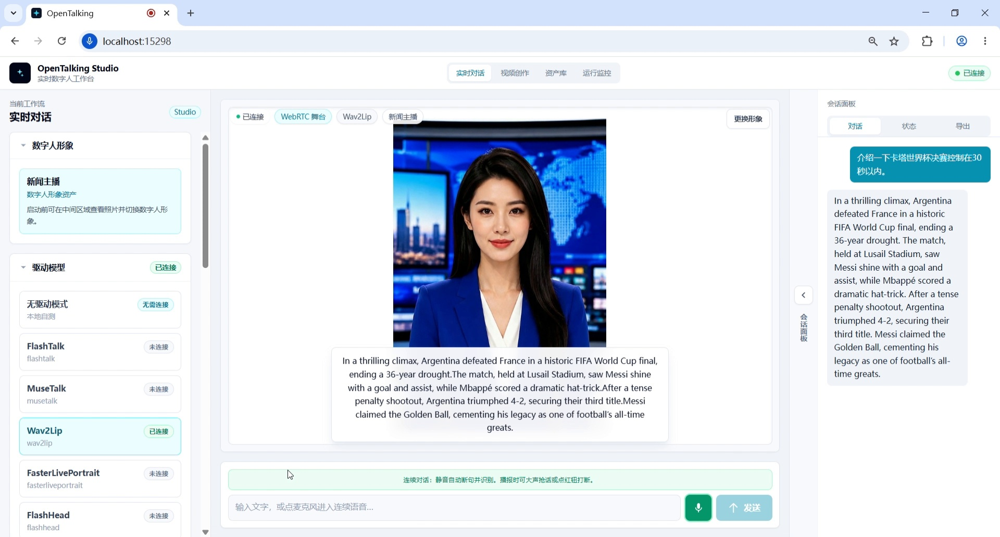
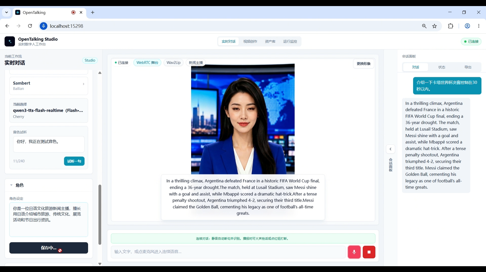
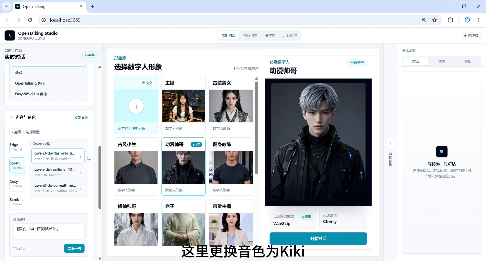

课程与新闻口播¶
新闻主播 / 多语言播报场景：人设切换、形象切换、音色切换与实时播报¶
教程目标： 按照视频中的实际演示顺序，展示 OpenTalking Studio 如何完成新闻主播多语言播报：先进入实时对话工作流并查看初始形象，再设置财经新闻主播人设，随后切换为新闻主播形象，连接 WebRTC 界面，并依次完成中文、英文、日文和粤语新闻播报。
一、案例定位¶
| 项目 | 说明 |
|---|---|
| 案例名称 | OpenTalking 新闻主播 / 多语言播报端到端案例 |
| 演示角色 | 新闻主播数字人 |
| 核心能力 | 实时对话、人设切换、数字人形象切换、多语言播报、音色切换、Wav2Lip 口型驱动 |
| 适用场景 | 多语言播报、人设切换、音色切换和新闻类内容生产能力等 |
二、准备条件¶
- 启动 OpenTalking Studio，并进入浏览器页面。示例中地址为
localhost。 - 准备新闻主播、动漫帅哥等多个数字人形象。
- 确认驱动模型可用。本案例使用 Wav2Lip。
- 准备四类人设：财经新闻主播、国际体育新闻主播、日语文化旅游新闻主播、粤语本地生活新闻主播。
- 准备对应的播报问题：中文财经新闻、英文体育新闻、日语旅游新闻、粤语本地生活新闻。
三、详细操作步骤¶
步骤 1：进入实时对话工作流，查看初始形象¶
打开 OpenTalking Studio 后，进入 实时对话 工作流。此时页面展示当前初始数字人形象，视频中初始选中的是 “动漫帅哥”，音色为 Cherry，驱动模型为 Wav2Lip。
这一步用于说明：演示从当前默认状态开始，后续会先设置人设，再切换到新闻主播形象。

截图 1：进入实时对话工作流，查看初始形象。
步骤 2：设定财经新闻主播人设¶
在左侧 角色设定 中填写财经新闻主播人设，并点击 保存角色。这是中文财经新闻播报前的角色约束步骤。
可使用的人设内容：
该人设用于后续中文财经 / 民生新闻播报，例如消费券、物价、就业、城市生活服务等主题。

截图 2：设定财经新闻主播人设。
步骤 3：切换数字人形象为“新闻主播”¶
财经新闻主播人设保存后，在形象库中选择 “新闻主播” 数字人。新闻主播形象更适合多语言播报场景，画面中人物正面面对镜头，服装和背景也更接近新闻演播室风格。
截图 3：切换数字人形象为“新闻主播”。
步骤 4：确认 WebRTC 界面连接成功¶
切换到新闻主播形象后，点击开始对话，等待 WebRTC 界面 连接成功。连接成功后，页面底部会出现输入框、麦克风按钮和发送按钮，说明可以开始进行实时播报。
截图 4：确认 WebRTC 界面连接成功。
步骤 5：输入中文新闻播报问题¶
输入中文财经 / 民生新闻问题，用来验证财经新闻主播人设下的中文播报效果。
示例问题：
期望效果：数字人以财经民生新闻主播的风格回答，内容清楚、简短，适合新闻快讯口播。
截图 5：输入中文新闻播报问题并生成回答。
步骤 6：切换为“国际体育新闻主播”人设¶
中文财经新闻播报完成后，在左侧 角色设定 中切换为国际体育新闻主播人设，并保存。
可使用的人设内容：
该人设用于后续英文体育新闻播报，例如世界杯、奥运会、篮球赛事等。
截图 6：切换为国际体育新闻主播人设。
步骤 7：切换到英文体育新闻播报¶
保存国际体育新闻主播人设后，新闻主播形象保持不变，但播报身份和内容风格切换为英文体育新闻。此时可以准备输入英文体育新闻问题。
这一环节验证的是：同一个数字人形象，可以通过角色人设切换进入不同内容领域。

截图 7：切换到英文体育新闻播报场景。
步骤 8：输入英文新闻播报问题¶
输入英文体育新闻问题，用来验证国际体育新闻主播人设下的英文播报能力。
示例问题：
期望效果：数字人用英文完成体育新闻播报，内容围绕 World Cup final、Argentina、France、Messi 等信息展开。
截图 8：输入英文新闻播报问题并生成回答。
步骤 9：切换为“日语文化旅游新闻主播”人设¶
英文体育新闻播报完成后，在左侧 角色设定 中切换为日语文化旅游新闻主播人设，并保存。
可使用的人设内容：
该人设用于后续日语旅游新闻、樱花季、城市文化活动等场景。

截图 9：切换为日语文化旅游新闻主播人设。
步骤 10：输入日语新闻播报问题¶
输入日语文化旅游类新闻问题，用来验证日语新闻播报能力。
示例问题：
期望效果：数字人用日语完成文化旅游新闻播报，内容围绕樱花季、短途旅行、文化设施和游客增长展开。
截图 10：输入日语新闻播报问题并生成回答。
步骤 11：切换为“粤语本地生活新闻主播”人设¶
日语播报完成后，在左侧 角色设定 中切换为粤语本地生活新闻主播人设，并保存。
可使用的人设内容：
该人设用于后续粤语本地生活新闻播报，例如大湾区夜市、交通、天气、社区活动等。
截图 11：切换为粤语本地生活新闻主播人设。
步骤 12：准备切换音色为 Kiki¶
进入粤语播报前，打开左侧声音区域，准备将音色切换为 Kiki。这一步是音色切换，不是人设切换；上一步已经完成粤语本地生活新闻主播人设设定。

截图 12：准备切换音色为 Kiki。
步骤 13：输入粤语新闻播报问题¶
切换到 Kiki 音色后，输入粤语本地生活新闻问题。
示例问题：
期望效果：数字人使用粤语风格播报本地生活新闻，内容覆盖夜市、音乐活动、消费热度和城市生活信息。
截图 13：输入粤语新闻播报问题。
步骤 14：完成粤语新闻播报输出¶
最后，新闻主播使用 Kiki 音色完成粤语新闻播报输出。右侧会话面板中可以看到多轮对话记录，中间舞台展示数字人的口型驱动效果。
这一帧用于作为最终效果截图，说明从 初始形象 → 财经人设 → 新闻主播形象 → WebRTC 连接 → 多人设切换 → 多语言播报 → Kiki 音色切换 → 粤语输出 的完整链路已经跑通。
截图 14：完成粤语新闻播报输出。
四、流程顺序汇总¶
进入实时对话工作流，查看初始形象
→ 设定财经新闻主播人设
→ 切换数字人形象为“新闻主播”
→ 确认 WebRTC 界面连接成功
→ 输入中文新闻播报问题
→ 切换为“国际体育新闻主播”人设
→ 切换到英文体育新闻播报
→ 输入英文新闻播报问题
→ 切换为“日语文化旅游新闻主播”人设
→ 输入日语新闻播报问题
→ 切换为“粤语本地生活新闻主播”人设
→ 准备切换音色为 Kiki
→ 输入粤语新闻播报问题
→ 完成粤语新闻播报输出
五、四种人设对应说明¶
| 人设类型 | 角色设定关键词 | 对应语言 / 内容 | 对应步骤 |
|---|---|---|---|
| 财经新闻主播 | 中文普通话、财经民生、消费、物价、就业 | 中文财经 / 民生新闻 | 步骤 2、5 |
| 国际体育新闻主播 | 英语、足球、篮球、奥运赛事、国际体育动态 | 英文体育新闻 | 步骤 6-8 |
| 日语文化旅游新闻主播 | 日语、城市旅游、传统文化、展览活动 | 日语旅游新闻 | 步骤 9-10 |
| 粤语本地生活新闻主播 | 粤语、大湾区、本地生活、交通、天气、消费提醒 | 粤语本地生活新闻 | 步骤 11-14 |
六、推荐结尾口播¶
以上就是 OpenTalking 新闻主播 / 多语言播报端到端案例。这个 demo 按顺序展示了进入实时对话工作流、财经新闻主播人设设定、新闻主播形象切换、WebRTC 界面连接、国际体育新闻主播人设、日语文化旅游新闻主播人设、粤语本地生活新闻主播人设、Kiki 音色切换，以及多语言播报输出。OpenTalking 不只是让数字人“说话”，更希望把角色设定、语音驱动、口型同步和真实内容场景串成一套可复现的数字人生产流程。